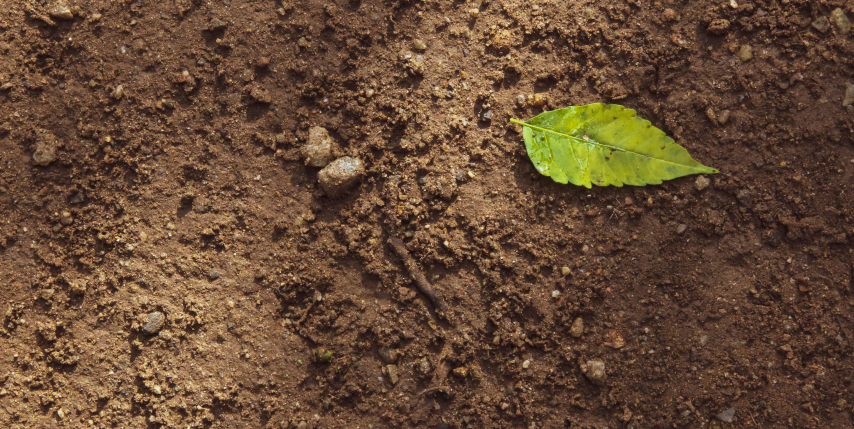

SOLOS


O solo é uma entidade complexa e vital que constitui a base da vida na Terra. Composto por uma mistura intricada de minerais, matéria orgânica, água, e uma infinidade de organismos vivos, o solo desempenha uma variedade de funções essenciais para os ecossistemas e para a sociedade como um todo.
Ao longo de milhares a milhões de anos, o processo de intemperismo atua sobre as rochas, fragmentando-as e liberando minerais que se misturam à matéria orgânica, dando origem ao solo. Esse processo contínuo forma camadas horizontais distintas, cada uma com características únicas de cor, textura e composição química.
O solo é um recurso multifuncional. Ele fornece os nutrientes necessários para o crescimento das plantas, atua como um reservatório e um filtro de água, oferece habitat para uma ampla gama de organismos e desempenha um papel crucial na reciclagem de nutrientes e na regulação do clima. Além disso, o solo é fundamental para a produção de alimentos e possui uma importância econômica significativa.
No entanto, o solo enfrenta uma série de desafios, incluindo erosão, compactação, salinização e degradação da qualidade. A má gestão dos solos pode levar à perda de fertilidade e à degradação dos ecossistemas, impactando negativamente a segurança alimentar e a biodiversidade.
Portanto, é imperativo adotar práticas de manejo sustentável do solo, como a rotação de culturas, o controle da erosão, o aumento da matéria orgânica e o uso responsável de fertilizantes e pesticidas.
 Sobre nós
Sobre nós Documentos
Documentos (11) 98954-2349
(11) 98954-2349 farmedcontato@gmail.com
farmedcontato@gmail.com